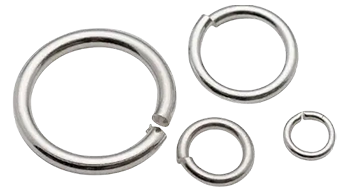
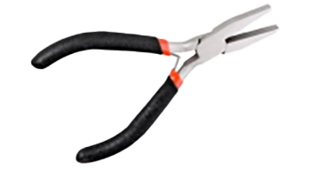
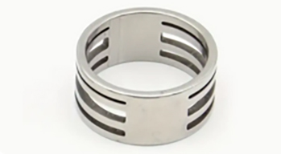

Værktøj
Springringe:
Nem at åbne og lukke:
Springringe er designet til at åbne og lukke let, hvilket gør dem ideelle til at tilføje eller fjerne smykker.
Sikker låsemekanisme:
Når de er lukket korrekt, holder springringe fast og sikker, hvilket forhindrer tab af smykker.
Fleksibilitet:
Springringe kan bruges i mange forskellige smykkedesigns, herunder halskæder, armbånd og øreringe.
Varierende størrelser:
Tilgængelige i forskellige størrelser for at passe til forskellige typer af smykker og perler.
Fladtang:
Præcision og kontrol:
Fladtænger giver præcis kontrol over ringene, hvilket er ideelt til at åbne og lukke ringe uden at deformere dem.
Styrke:
Fladtænger er robuste og kan håndtere tykkere og stærkere ringe uden at beskadige dem.
Mange formål:
Kan bruges til at bøje, flade og forme metal, hvilket gør dem til et alsidigt værktøj i smykkefremstilling.
Erhvervsmæssig kvalitet:
Mange fladtænger er designet til professionelt brug, hvilket sikrer længere levetid og bedre ydeevne.
Ringåbner:
Specielt designet til ringe:
Ring åbnere er designet specifikt til at åbne og lukke ringe uden at beskadige dem, hvilket gør dem ideelle til smykkefremstilling.
Nem at bruge:
Ring åbnere er lette at bruge, selv for begyndere, og giver en jævn og ensartet åbning af ringe.
Bevarer ringenes form:
Ved at bruge en ring åbner, bevares ringenes oprindelige form, hvilket er vigtigt for at opretholde smykkekvaliteten.
Effektivitet:
Ring åbnere gør processen med at åbne og lukke ringe hurtigere og mere effektiv, hvilket sparer tid og indsats.
